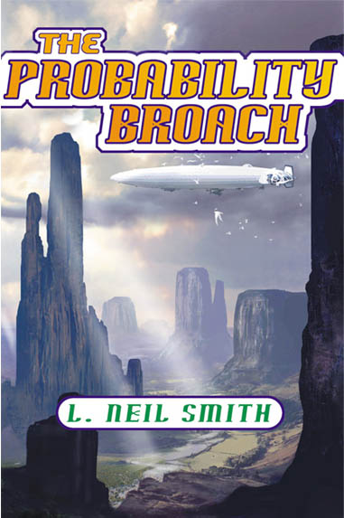

The Probability Broach
by L. Neil Smith
lneil@lneilsmith.org
trade paperback edition ("quality paperback" sized)
publication date: December 2001 from Tor books
In a deadly conflict with murderous federal agents, Denver homicide detective Win Bear is accidentally blown "sideways" in time, into the North American Confederacy, where the Whiskey Rebellion succeeded in 1794, and government has grown less powerful ever since.
L. Neil Smith's first book, originally published by Del Rey Books (Random House), 1980, and Tor Books, 1996. 1980/81. Prometheus Award winner, widely considered the definitive libertarian novel.
Reissued by Tor Books, December, 2001 in trade format.
Order the trade paperback edition of The Probability Broach from Amazon.com via this link: ORDER, or click the link for more information.
Edited by James Frenkel
Design by Jane Adele Regina
[Cover art by Stephan Martiniere]
An Orb Edition
Published by Tom Doherty Associates, LLC
175 Fifth Avenue
New York, NY 10010
First Tor edition: October 1996
First Orb edition: December 2001
ISBN: 0-765-30153-9
Library of Congress Catalog Card Number: 2001036576